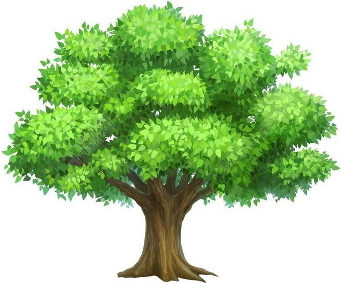
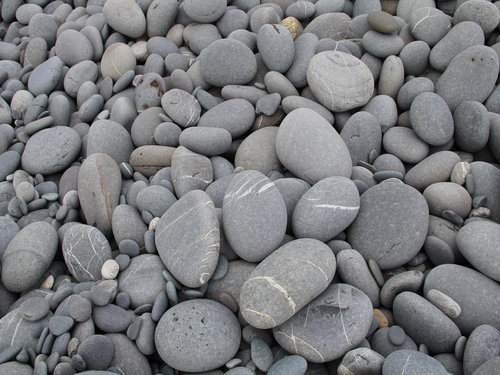

<!DOCTYPE html>
<html>
<head>
    <meta charset="UTF-8">

    <title>demo</title>
    <style type="text/css">
        /*圖片*/
        .photo {
            position: absolute;
            margin-top: 100px;
            margin-left: 100px;
            overflow: hidden;
            width: 100px;
            height: 100px;

        }

        /*地圖範圍*/
        .map {
            position: absolute;
            padding-top: 100px;
            padding-left: 100px;
            overflow: hidden;

        }

        /*通行*/
        .pass {
            height: 100px;
            width: 100px;
            background: yellow;
            float: left;
        }

        /*障礙*/
        .obstacle {
            height: 100px;
            width: 100px;
            /*background: blueviolet;*/
            float: left;
        }

    </style>
    <script type="text/javascript" src="js/jquery-3.2.1.min.js"></script>
    <script type="text/javascript">

        var map = [
            [0, 0, 0, 0, 0],
            [0, 1, 0, 1, 0],
            [0, 1, 0, 1, 0],
            [0, 1, 0, 1, 0],
            [1, 1, 0, 1, 0],
            [0, 0, 0, 0, 0]];
        // map陣列值為 0 可以圖片通行
        // map陣列值為 1 可以圖片通行
        var verticalLength = map.length;// 欄
        var horizontalLength = map[map.length - 1].length;// 列

        var vertical = 5;// 圖片初始位置 陣列 欄
        var horizontal = 0;// 圖片初始位置 陣列 列
        $(function () {
            $("#start").css("top", vertical * 100);// 圖片初始位置 陣列 欄
            $("#start").css("left", horizontal * 100);// 圖片初始位置 陣列 列
            $("#top").css("top", vertical * 100);// 圖片初始位置 陣列 欄
            $("#top").css("left", horizontal * 100);// 圖片初始位置 陣列 列
            //
            $("#map").css("height", verticalLength * 100);// 透過陣列 橫 得知地圖最大高度範圍
            $("#map").css("width", horizontalLength * 100);//透過陣列 列 得知地圖最大長度範圍
            //
            for (var i = 0; i < verticalLength; i++) {
                for (var j = 0; j < horizontalLength; j++) {
                    if (map[i][j] == 1) {
                        $("#map").append(" </img>");
                        // 障礙物
                    } else {
                        $("#map").append("</img>");
                        // 可通行
                    }
                }
            }


        });

        $(document).keydown(function (event) {
            $("#start").css("display", "none");
            $("#top").css("display", "inline");

            switch (event.which) {
                case 37:// 鍵盤 左按鍵
                    move("左", horizontal, vertical);
                    // //
                    // if (horizontal > 0) { // 防止超過界線
                    //     horizontal -= 1; // 陣列向左移動
                    //     var obstacle = move(map[vertical][horizontal], "left", horizontal, vertical);
                    //     if (obstacle == true) {
                    //         horizontal += 1;// 不能通行，將陣列向右移動。設為原來位置
                    //     }
                    //
                    //     console.log(vertical + "," + horizontal);
                    // }


                    break;
                case 38:// 鍵盤 上按鍵
                    move("上", horizontal, vertical);
                    // if (vertical > 0) { // 防止超過界線
                    //     //
                    //     vertical -= 1;// 陣列向上移動
                    //
                    //     var obstacle = move(map[vertical][horizontal], "top", horizontal, vertical);
                    //     if (obstacle == true) {
                    //         vertical += 1;// 不能通行，將陣列向上移動。設為原來位置
                    //     }
                    //
                    //     console.log(vertical + "," + horizontal);
                    // }

                    break;
                case 39:// 鍵盤 右按鍵
                    move("右", horizontal, vertical);
                    //
                    // if (horizontal < horizontalLength - 1) { // 防止超過界線
                    //     //
                    //     horizontal += 1;// 陣列向右移動
                    //
                    //     var obstacle = move(map[vertical][horizontal], "left", horizontal, vertical);
                    //     if (obstacle == true) {
                    //         horizontal -= 1;// 不能通行，將陣列向右移動。設為原來位置
                    //     }
                    //
                    //     console.log(vertical + "," + horizontal);
                    //
                    // }
                    break;
                case 40:// 鍵盤 下按鍵
                    move("下", horizontal, vertical);
                    // if (vertical < verticalLength - 1) { // 防止超過界線
                    //     //
                    //     vertical += 1;// 陣列向下移動
                    //
                    //
                    //
                    //     var obstacle = move(map[vertical][horizontal], "top", horizontal, vertical);
                    //     if (obstacle == true) {
                    //         vertical -= 1;// 不能通行，將陣列向下移動。設為原來位置
                    //     }
                    //
                    //     console.log(vertical + "," + horizontal);
                    // }
                    break;
                default:
                    break;
            }

        });

        // 選轉圖片
        function rotate(rotate) {
            $("#top").css("transform", "rotate(" + rotate + "deg)");
            $("#top").css("-ms-transform", "rotate(" + rotate + "deg)");
            $("#top").css("-moz-transform", "rotate(" + rotate + "deg)");
            $("#top").css("-webkit-transform", "rotate(" + rotate + "deg)");
            $("#top").css("-o-transform", "rotate(" + rotate + "deg)");
        }

        // 圖片移動
        function move(direction, horizontal, vertical) {
            switch (direction) {
                case "左":
                    // 圖片選轉 270 度
                    rotate(270);
                    if (horizontal > 0) {

                        this.horizontal = horizontal - 1; // 陣列向左移動
                        var obstacle = pass(map[this.vertical][this.horizontal], "left", this.horizontal, this.vertical);
                        if (obstacle) {
                            this.horizontal += 1;// 不能通行，將陣列向右移動。設為原來位置
                        }
                    }
                    break;
                case "上":
                    //  圖片選轉 0 度
                    rotate(0);
                    if (vertical > 0) {

                        this.vertical = vertical - 1;// 陣列向上移動
                        var obstacle = pass(map[this.vertical][this.horizontal], "top", this.horizontal, this.vertical);
                        if (obstacle) {
                            this.vertical += 1;// 不能通行，將陣列向上移動。設為原來位置
                        }
                        //
                    }
                    break;
                case "右":
                    // 圖片選轉 90 度
                    rotate(90);
                    if (horizontal < horizontalLength - 1) {

                        this.horizontal = horizontal + 1;// 陣列向右移動
                        var obstacle = pass(map[this.vertical][this.horizontal], "left", this.horizontal, this.vertical);
                        if (obstacle) {
                            this.horizontal -= 1;// 不能通行，將陣列向右移動。設為原來位置
                        }
                        //
                    }

                    break;
                case "下":
                    // 圖片選轉 180 度
                    rotate(180);
                    if (vertical < verticalLength - 1) {
                        this.vertical = vertical + 1;// 陣列向下移動
                        var obstacle = pass(map[this.vertical][this.horizontal], "top", this.horizontal, this.vertical);
                        if (obstacle) {
                            this.vertical -= 1;// 不能通行，將陣列向下移動。設為原來位置
                        }
                    }
                    break;

            }

            // 判斷是否通行
            function pass(map, direction, horizontal, vertical) {
                if (map == 0) {// 可以通行
                    switch (direction) {
                        case "top":
                            // 四個圖片同時移動
                            $("#top").css("top", vertical * 100 + "px");
                            $("#down").css("top", vertical * 100 + "px");
                            $("#left").css("top", vertical * 100 + "px");
                            $("#right").css("top", vertical * 100 + "px");
                            break;
                        case "left":
                            $("#top").css("left", horizontal * 100 + "px");
                            $("#down").css("left", horizontal * 100 + "px");
                            $("#left").css("left", horizontal * 100 + "px");
                            $("#right").css("left", horizontal * 100 + "px");
                            break;
                    }
                } else {// 不可通行
                    return true;
                }
            }
        } // move


        // 通行
        function pass(map, direction, horizontal, vertical) {
            if (map == 0) { // 可以通行
                switch (direction) {
                    case "left":// 左
                        console.log("01.左 右 " + direction + " horizontal " + horizontal);
                        $("#top").css("left", horizontal * 100 + "px");
                        break;
                    case "top":// 上
                        console.log("02.上 下 " + direction + " vertical " + vertical);
                        $("#top").css("top", vertical * 100 + "px");
                        break;
                }
            } else {
                return true;
            }
        }
    </script>

</head>
<body>


<!--地圖-->
<div id="map" class="map">
    <!--圖片-->
    
    
    <!--&lt;!&ndash;區塊 可通行&ndash;&gt;-->
    <!---->
    <!--&lt;!&ndash;區塊 不可通行&ndash;&gt;-->
    <!---->
</div>
</body>
</html>
